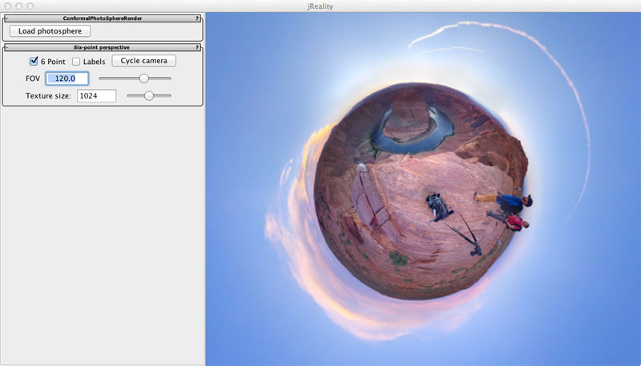

Author: Charles Gunn (Website)
This application demonstrates a method of rendering viewable spheres, also known as spherical panoramas. This projection is based on stereographic projection of the sphere onto the plane. See the documentation of the six-point perspective plugin for details of this process.
For a fuller explanation of the mathematics and the implementation details see this paper, "Rendering the Whole World with Conformal Curvilinear Perspective", to appear in Bridges 2013, Enschede, Holland July 27-31, 2013.
When the program starts up, it should appear roughly as in the screen-shot below. On the right is a "tiny planet" created from a PhotoSphere image by the photographer Colby Brown. Left-clicking on this window and dragging rotates the viewable sphere, changing the projection point and creating more six-point perspective images. Middle-mouse click-and-drag to rotate in the x-y plane of the screen, for example, to bring the human figures to the top of the ball without changing the projection point.
The controls on the LHS are as follows. Click on the Load photosphere button to load a single image representing a viewable sphere. For example, PhotoSphere format images can be loaded. (There are of course other formats for such viewable spheres, e. g., cube maps, but they are not loadable here).
For use of the six-point perspective panel, see the documentation on this plugin.
You can fly around by using the arrow keys, but it isn't recommended since the three camera positions provided are all you really need. If you do fly around, you can undo the flying by using the Cycle camera button to return to the standard positions.
To save images in png or jpg format use the menu item "File->Export->Image..."
Questions and suggestions can be directed to the author, Charles Gunn, at gunn@math.tu-berlin.de
For more on the scene graph used: jReality
